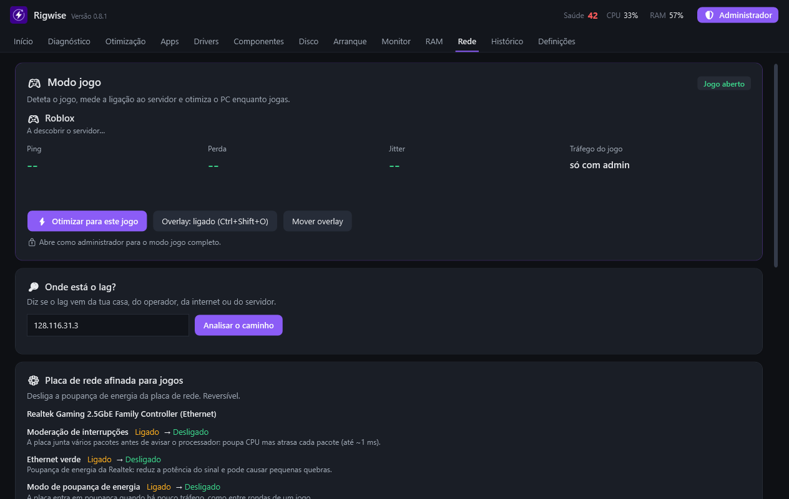
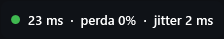
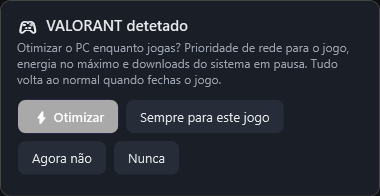
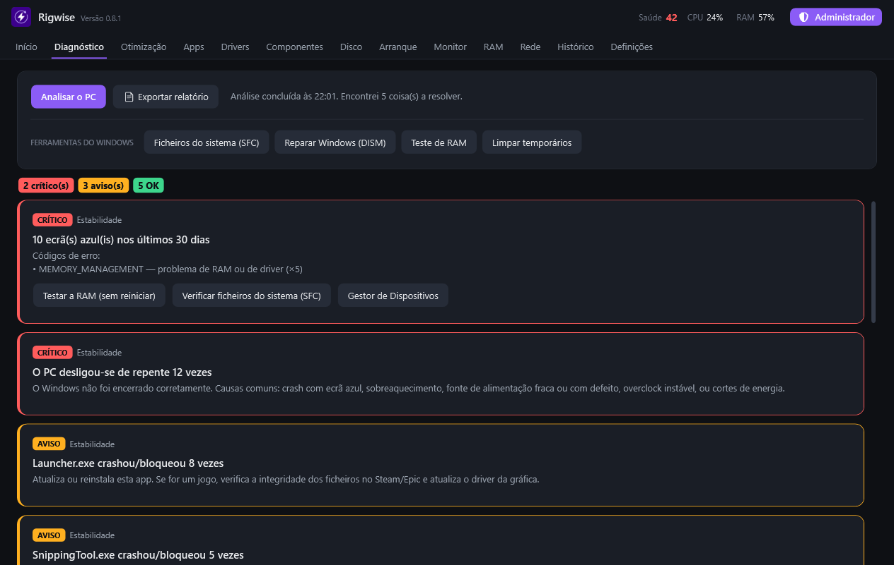
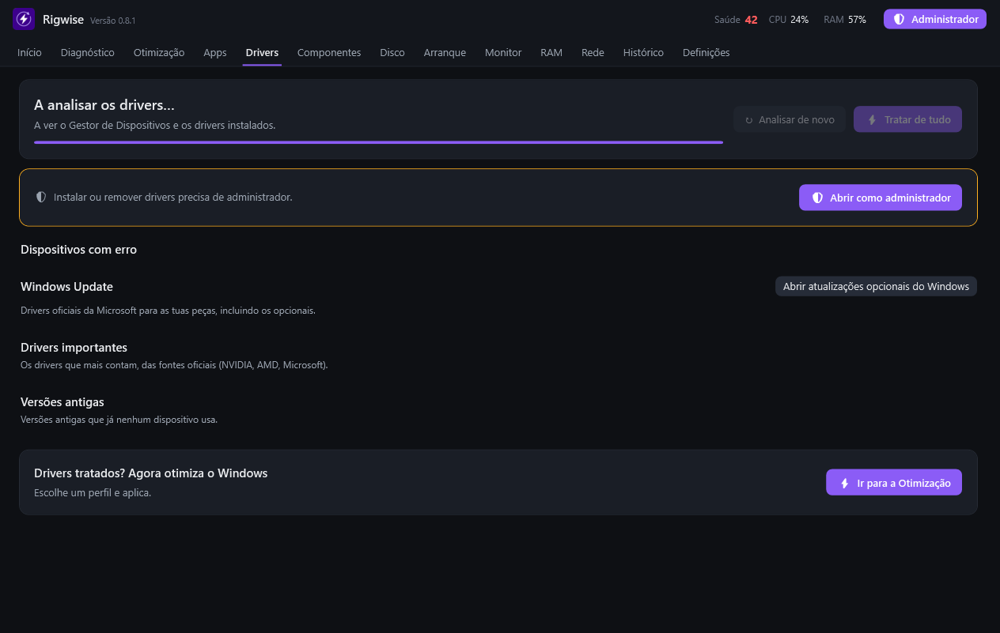

Porque é que o teu PC está lento, crasha ou dá lag?Why is your PC slow, crashing or lagging?
O Rigwise descobre a causa e explica-a em linguagem simples: ecrãs azuis, RAM instável, drivers velhos, disco cheio, o Wi-Fi ou o teu operador. Depois resolve, e tudo o que muda pode ser desfeito. Rigwise finds the cause and explains it in plain words: blue screens, unstable RAM, old drivers, a full disk, your Wi-Fi or your provider. Then it fixes it, and everything it changes can be undone.
Grátis · Windows 10 e 11 (64 bits) · versão mais recente Free · Windows 10 and 11 (64-bit) · latest version
- CasaHomeo teu routeryour router1 ms
- OperadorProvidera rede do teu fornecedor de internetyour internet provider's network9 ms
- Interneto caminho pelo meiothe path in between21 ms
- ServidorServero jogothe game24 ms
Sem perda de pacotes nem saltos de atraso. Se sentes lag, é o servidor do jogo.No packet loss and no delay jumps. If you feel lag, it's the game server.
O que fazWhat it does
Não é um "limpador" que promete milagres. Lê o que o Windows já sabe (relatórios de crash, Gestor de Dispositivos, eventos de rede), mede o que falta e diz-te o que fazer primeiro. It's not a "cleaner" that promises miracles. It reads what Windows already knows (crash reports, Device Manager, network events), measures what's missing and tells you what to do first.
Modo jogoGame mode
Quando abres um jogo online, a app deteta-o, descobre o servidor a que estás ligado e mostra o ping, a perda de pacotes e o jitter ao vivo, também por cima do jogo.When you open an online game, the app detects it, finds the server you're connected to and shows ping, packet loss and jitter live, also on top of the game.
- Otimiza só enquanto jogas e repõe tudo no fim.Optimizes only while you play and restores everything afterwards.
- O overlay é uma janela à parte: não injeta nada no jogo nem mexe com anti-cheats.The overlay is a separate window: it injects nothing into the game and doesn't touch anti-cheats.
- 35 jogos reconhecidos, e acrescentas os teus.35 games recognized, and you can add your own.



Ecrãs azuis explicadosBlue screens explained
Lê os relatórios de crash que o Windows guarda e diz se o culpado é um driver concreto ou a memória RAM. Se for a RAM, testa-a sem reiniciar e guia-te na BIOS, passo a passo, para a tua motherboard.Reads the crash reports Windows keeps and tells you whether the culprit is a specific driver or the RAM. If it's the RAM, it tests it without restarting and guides you through the BIOS, step by step, for your motherboard.

Drivers das fontes oficiaisDrivers from official sources
Encontra drivers em falta, com erro ou antigos e instala a versão nova da NVIDIA, da AMD ou do Catálogo do Microsoft Update. Verifica a assinatura digital do fabricante antes de instalar e cria um ponto de restauro.Finds missing, faulty or old drivers and installs the new version from NVIDIA, AMD or the Microsoft Update Catalog. It checks the manufacturer's digital signature before installing and creates a restore point.

Espaço em discoDisk space
Mostra o que ocupa espaço e diz, pasta a pasta, se é seguro apagar. O que é do Windows fica bloqueado.Shows what takes up space and says, folder by folder, whether it's safe to delete. Windows' own folders stay locked.
Tudo se desfazEverything can be undone
Cada alteração fica no Histórico com um botão para desfazer. Pastas apagadas vão para a Reciclagem.Every change goes into History with an undo button. Deleted folders go to the Recycle Bin.
Modo simulaçãoSimulation mode
Experimenta tudo sem mudar nada: os botões só mostram o que fariam.Try everything without changing anything: the buttons only show what they would do.
"O Windows protegeu o computador""Windows protected your PC"
Na primeira vez que abres a app, o Windows pode mostrar este aviso. Para continuar: The first time you open the app, Windows may show this warning. To continue:
- Extrai o ZIPExtract the ZIPBotão direito › Extrair tudo. Fica uma pasta "PC Optimizer".Right-click › Extract All. You get a "PC Optimizer" folder.
- Abre o PCOptimizer.exeOpen PCOptimizer.exeSe aparecer o aviso azul, clica em "Mais informações".If the blue warning appears, click "More info".
- Clica em "Executar mesmo assim"Click "Run anyway"Só é preciso da primeira vez.You only need to do this the first time.
- Instala no PC (opcional)Install on the PC (optional)Em Definições › Instalar no PC fica no Menu Iniciar e atualiza-se sozinha.In Settings › Install on the PC it goes into the Start menu and updates itself.
Porque aparece?Why does it appear?
O Windows avisa em programas novos que ainda não têm uma assinatura digital paga. O aviso vai desaparecendo à medida que mais pessoas usam a app.Windows warns about new programs that don't have a paid digital signature yet. The warning fades as more people use the app.
A app não precisa de administrador para ver o PC. Pede-o só quando vais aplicar alguma coisa, e diz sempre o que vai fazer antes.The app doesn't need administrator to look at your PC. It only asks when you're about to apply something, and always says what it will do first.
RequisitosRequirements
- SistemaSystem
- Windows 10 / 11, 64 bits
- EspaçoSpace
- ~200 MB
- LínguasLanguages
- Português, English